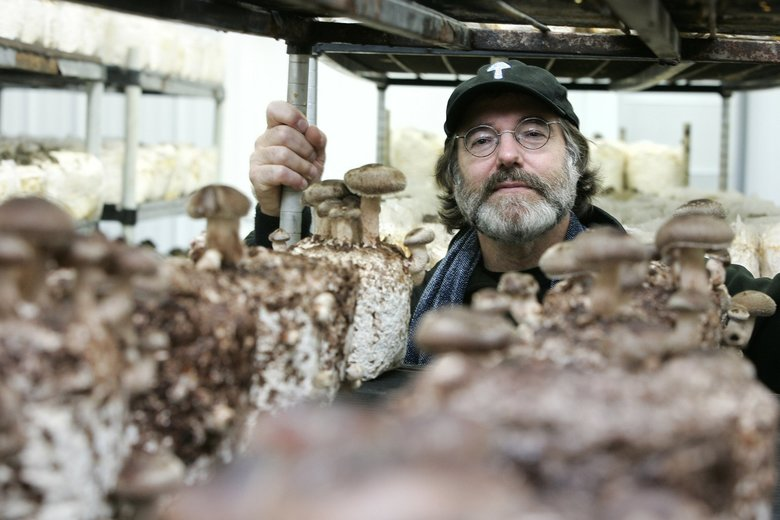
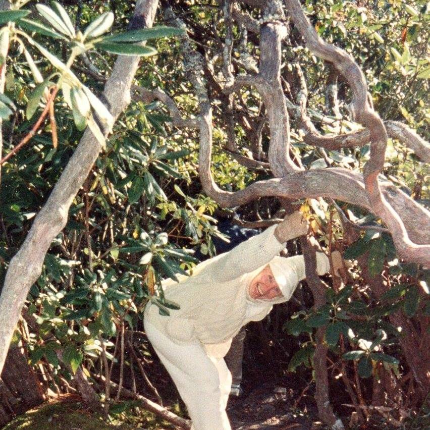
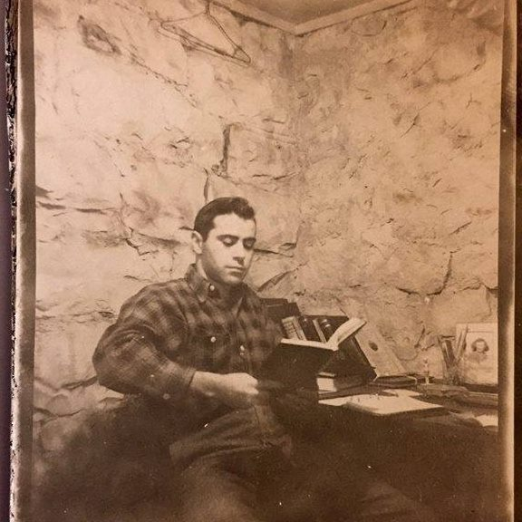

"What is a weed? A plant whose virtues have not yet been discovered"
~Ralph Waldo Emerson
I happen to think Pokeweed is a beautiful plant. It grows to the size of a small tree, seven feet tall and about that wide. I love its reddish-purple stalk and stems, big lush green leaves, spears of white flowers and deep purple-black berries that hang like clumps of small grapes in late summer. Never mind that the berries are poisonous to humans and some other mammals. The birds love them.
The first spring that I lived in my home on Dresden, the lawnmower jockeys passing by would always comment on the “weeds” growing in my yard.
They would shout out with a sense of urgency.
“Them are weeds! You better get those out of there! I can pull them out for you!
I would smile back and reply,
"Well, those feed the birds and those feed the bees and I think they're pretty plants. Do you not think they are beautiful plants?"
My style of gardening was simple:
When some sort of green thing has popped up out of the ground since I last mowed, if it looks interesting, I mow around it.
Our ongoing verbal exchanges, sometimes rather humorous ones, provided a source of entertainment for all parties.
"You better pull out those dandelions. Your neighhbors will have a fit. And the city will probably fine you for each and every one. I'd hate to see that happen. And you especially better get rid of all that 'ragweed'!" they'd say with a smile, and a head shake.
"Oh dear!", I exclaim with feigned alarm. "Which plants do I need to pull? Which plants are weeds? That plant over there! Surely you don't mean THAT plant! Not the Goldenrod! Not the Kentucky state flower!"
Who could argue against the state flower!
Ultimately there was compromise. I began removing faded dandelions before their seeds pods could float to a neighbor's yard.
And acceptance. I really do enjoy my neighbors, and I dare to think that they now enjoy having me as their neighbor as well.
And friendly neighborly familiarity... AND...
... a carbon sink!
--in the middle of some of the worst air quality in the city.
I discovered this one night when I went outside to look for one of my cats.
I walked across my front yard through a symphony of nature sounds. The space was alive and thriving. I walked out the front gate and turned right to walk down the sidewalk in front of my yard--the night air teeming with nature sounds.
When I reached my next door neighbor's property it was as if someone had disconnected the speakers. There was no sound, no life.
I turned and walked back to the front of my yard and sure enough the cricket symphony played on.
I turned and walked back down the sidewalk to my next door neighbor's, and yes, there was no audio evidence of any life on her property. I walked passed the next house. No life. And the next. No life. Back to the house on the other side of my house. No sound. No life.
Carbon sinks include the oceans, plants, and soil. They pull and store more carbon than they give off.
Carbon sources include emissions from burning fossil fuels, forest fires, and respiration.
A carbon sink is growing in size and storing more carbon compared to a carbon source which is shrinking in size and releasing more carbon.
A poke plant, a dandelion, a violet. Native plants, native trees allowed to create beautiful natural borders around a property. A few well grown nursery plants and evergreens thrown in just for fun. What enormous gifts these small underrated things give back.
He made a small observation that bees were flying back and forth from their hive to a field of muchrooms. This led to a big discovery that might help save the world.
click/tap for more
Find the right quote
for this top-note.
So some pretty obvious themes are bouncing around in my mind.
- That beauty truly is a matter of personal preference, or as they say, 'beauty is in the eye of the beholder'.
- That we should each be allowed our own personal preference as long as it does not violate a basic right of another.
That many things, actions, and living creatures, whose value is most often underrated, unacknowledged or even unrecognized entirely may be quietly contributing to the enhanced quality of life to all those who run across them.
Like the receptionist of a health care practitioner who always greets you with a smile and such positive energy that you would almost go there for the greeting alone. And you really miss her now that she is gone because the new receptionist treats you as if you are an unwanted uninvited even despised 'guest'. And you're thinking you might just look for another health care provider. But you really like your current practitioner. But is it worth it considering the regular dose of mean spiritedness you have to endure?
If we could only see the bigger picture, I think we would realize the value, the potential, the preciousness, the beauty of each and every one.
-
One’s perception of one of these things, individuals or actions that have been under appreciated can change dramatically due to circumstance, new information, new experiences, new understanding, personal 'evolution' or a more open minded and creative way of thinking.
I disregarded a classmate I had never met because I misinterpreted her expression of anxiety as contempt. I later discovered that she was feeling the same about me. She gathered the courage to approach me at a social event--smiling and introducing herself. This small jesture led to the resolution of our misunderstanding. We discovered that we really enjoyed each other's company. We became fabulous friends, and she is my friend to this day—decades after our meeting and now living thousands of miles apart.

"Necessity is the mother of invention"
~old English proverb
"Quote about everything existing in the ...."
~
"A home is in a paperclip"
~nobody really
In times of scarcity it becomes easy to appreciate things previously taken for granted--simple pleasures, random acts of kindness and of course the repurposing of little things on hand in place of things needed but not in the budget.
Consider a paper clip. I have used a paper clip to fix my toilet in a pinch. I've also used them to secure bags, reset electronic components, fix a bra strap, secure a broken necklace and hang a picture. Paperclips are pretty handy little gadgets. But it never would have occurred to me to try to buy a house with one. It did occur to Kyle MacDonald though. He started with a paper clip and, through a series of trades, traded up to a house!
How Kyle MacDonald turned a paper clip into a house.
The other side of it is the fun of trading DOWN when you have plenty...
and you need to get rid of some of your things in an enviromentally friendly way. An ecstatic someone gets a great deal and you get some space back and to see joy alight the face of another as they depart with their treasure.
Love is no big deal.
It's a million little things.
I feel tremendous love and appreciation for many people with whom I have crossed paths--and certainly for my mother and father. My childhood was far from perfect. Everyone makes mistakes and we all made a few. But there were a million little things that they got right. We were loved.
Through my mother’s eyes, and through her exuberance, I learned to see the beauty of wild plants, a sunset, a blank canvas, an idea, an adventure, and that you're never too old to follow your dreams.
Though my dad I learned what a great work ethic looks like, the fun of a good pun, the rewards of tending an iris bed, the joy of the simple yet sumptuous pleasure of sitting and sipping while reading a good book.
Cats and Dogs and Khia and that guy who stood up for me whose name I will never know. Etc etc. Ipsum Opsum Scadittle Scadash Scadoo.
Stories
Weed Wacked - Perceptions in the Neighborhood
Carbon sink - An unexpected gift
No Worries! We are monkeys. We are stardust. We are golden.
Weed Eaters - Edible wild plants
Paperclips and the nature of preciousness
Your Story here.
Your Story here.